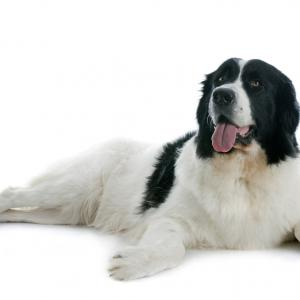

Landseer

Al ver al landseer muchos pueden pensar que se trata de
un terranova blanco y negro, pues su similaridad con esta
raza es realmente asombrosa, pero son razas distintas.
El landseer es un perro de tipo moloso, al igual que el
terranova, sin embargo, sus particularidades han hecho que
se le reconozca oficialmente como una raza totalmente separada.
| Origen: |
Europa-Alemania-Suiza |
| Altura: |
70-80cm |
| Peso: |
45-100kg |
Ver